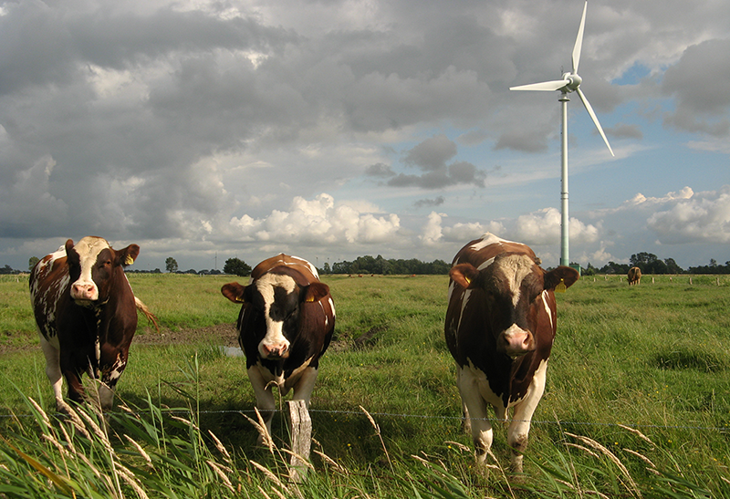
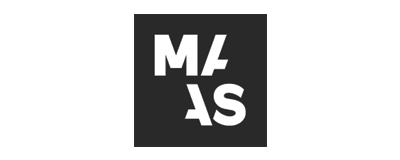
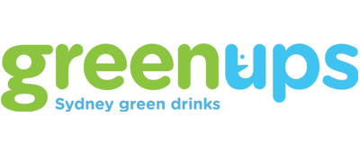
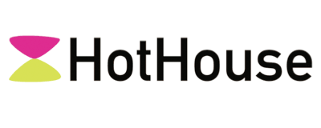
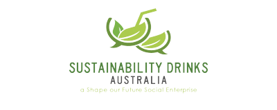

The GreenHouse Project kicks off April 2016, and continues every 1st Tuesday of the Month at the The Junction Cafe, Level 1 (the lower-ground floor), Museum of Applied Arts and Sciences (Powerhouse Museum) (access is via Macarthur St off Harris St), adjacent to The Goods Line.
Engage with some thought-provoking talks and panel discussions, catch up with old friends, meet new allies, forge opportunities, share ideas, hone skills and grow. All while enjoying an organic, locally-foraged drink care of the Trolley'd boys and delicious sustainable fare thanks to Create Catering, in the grounds of an iconic Sydney institution.
For the May edition of The Greenhouse Project, we're delving into the divisive question of diet, climate and food by asking...
Each of our panellists has a stake in the food game and brings a fresh perspective on a complicated issue.
Expect a conversation that explores the intersection of local food production, environmental footprints, land use, permaculture, organic farming and food technology. With a seasoning of societal trends and behaviour change. All while enjoying an after-work drink and sustainable fare.
Sydney is defined in the eyes of its people and globally by spectacular ocean beaches and waterways. Our magnificent, but vulnerable shorelines put us on the frontline of some of the world’s most confronting environmental challenges:
While the challenges are global, often the causes and solutions can be local – so what we do can make a difference!
The Greenhouse is bringing together top campaigners to confront our marine challenges, and to explore what needs to be done on the Shoreline Frontline.
Are you interested in supporting The Greenhouse?
We're looking for businesses and organisations who are wholly aligned with our communities core values of sustainability, environmental and ecological awareness. Alongside this, we're focussed on building respect, equal-opportunity, innovation, design-thinking and collaboration.
If that sounds like you, get in touch with us here.
   